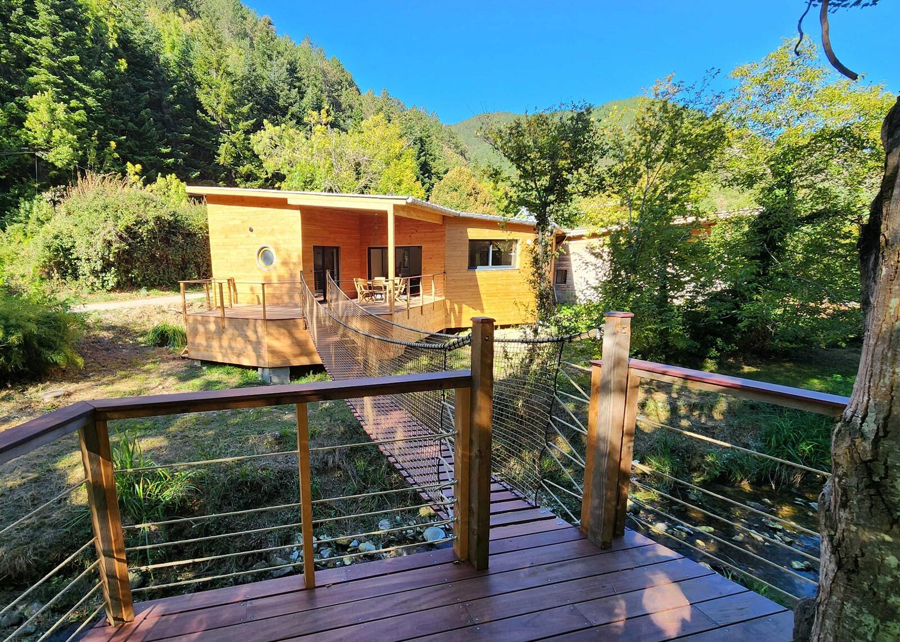
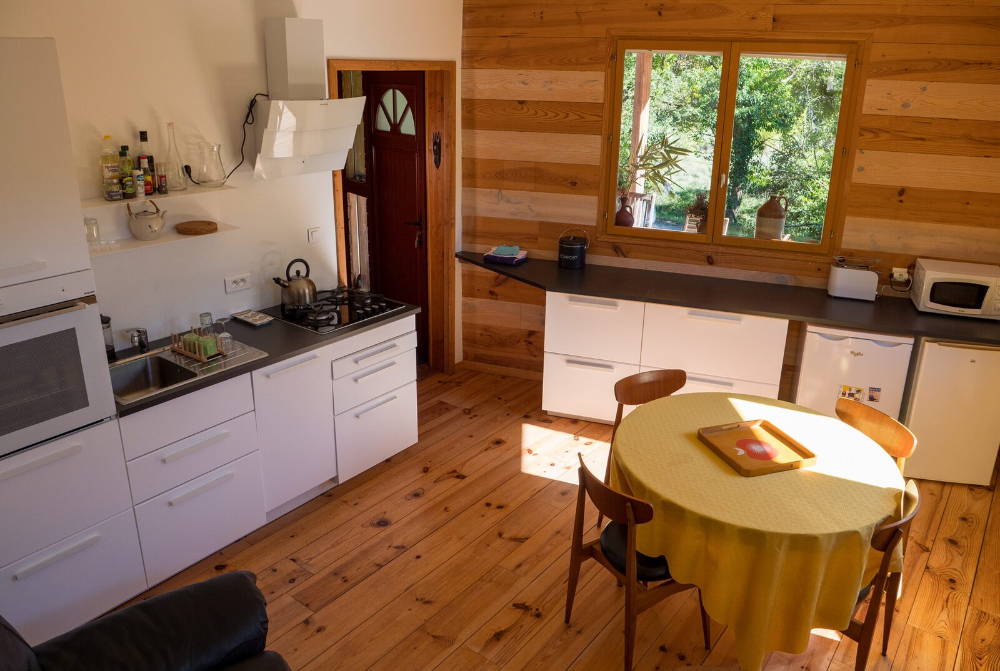

À la une
Joncelets · Deux gîtes en pleine nature
Les Gîtes des Libellules
Le bois, les arbres et une terrasse pour prendre le temps. Les Libellules et les Demoiselles sont deux gîtes à construction bioclimatique, chacun avec sa cuisine équipée et sa terrasse de 30 m².

Le gîte des Libellules
La terrasse et sa passerelle, au milieu des arbres.
1 à 6 personnes 3 chambres
- Terrasse de 30 m² et cuisine équipée
- Connexion par fibre annoncée

Le gîte des Demoiselles
Une cuisine lumineuse et son coin repas.
1 à 6 personnes 2 chambres
- Terrasse de 30 m² et cuisine équipée
Photos : Gîtes des Libellules · reproduites avec autorisation.
Préparer votre séjour avec Xavier
- Votre arrivée
- Joncelets, 34650, selon l’adresse indiquée par l’hébergeur. Demandez l’itinéraire d’arrivée avant le départ.
- Le gîte qui vous convient
- Précisez vos dates, le nombre de personnes, le gîte choisi et la présence éventuelle d’animaux.
- Accessibilité
- Le gîte des Libellules est annoncé non accessible aux personnes à mobilité réduite. Échangez avec Xavier sur vos besoins avant de réserver.
- Un autre numéro pour le joindre
- Fixe : 04 67 95 13 75
Sources : contact et capacités, équipements et accès, consultés le .